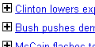
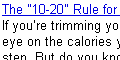

Thanks for your interest in my gadgets. Here is a list of all the gadgets I created during my spare time. Feel free to add them either to your personalized iGoogle page or any of your webpages(some gadgets are not supported). You can see the preview here..
| Gadget | Add to |
Description |
||
|---|---|---|---|---|
| iGoogle | webpage | toolbar* | ||
 |
Add | Not Applicable | Uday's Quick Stock Watch - A simple Stock Quotes and Portfolio tracking module. Works for over 30 international markets - Argentina, Australia, Austria, Belgium, Brazil, Canada, China, Denmark, Egypt, France, Germany, Hong Kong, India, Israel, Italy, Japan, Jakarta, Korea, Malaysia, Mexico, Netherlands, New Zealand, Norway, Singapore, Spain, Sweden, Switzerland, Taiwan, Turkey, UK, United States and more.. You can watch the up/down ticks of your favorite stocks and monitor your portfolio at desired intervals (Data provided by Yahoo! Finance) More | |
|
Add | Add | Uday's Global Index Watch - Snapshot of major stock market indices of the world. Covers most of american, european, asian and australian markets. (Data provided by Yahoo! Finance) More | |
|
Add | Add | Uday's IPL 2008 Cricket Live scores - Displays real-time scores and updates from the Indian Premier League 2008 T20 cricket tournment | |
|
Add | Add | Uday's Real-time Traffic - Displays real-time traffic information in over 50 cities in the United States. Ability to choose freeways to monitor. A great tool for people whose daily commute depends on traffic (Data provided by Traffic.com) More | |
|
Add | Add | Uday's Dilbert Comics - Displays a random dilbert comic to start your day with a giggle - Courtesy : Dilbert.com | |
|  | |
Add | Add | Uday's Personalized News - Why look all over the internet for the news you are interested in? Create your own personalized news feed using this gadget. Your search query overrides the selected news section. You can also pick an existing news section(Data provided by Yahoo! News) |
|
Not Applicable | Not Applicable | Uday's Scratch Pad - Looking for a scratch pad on your homepage? Here it is.. Write down whatever you want and never worry about saving it.. | |
|
Add | Add | Uday's Recipe of the day - Garnish your personalized homepage with a recipe of the day. Great module for all the cooks looking for ideas (Data provided by Yahoo! Food) | |
|  | |
Add | Add | Uday's Health Tip of the day - Follow these simple tips one a day to stay healthy (Data provided by Yahoo! Health) |
* Toolbar option currently available for Internet Explorer 6.0+ only. More
(Last Updated : Dec 07th 2008)